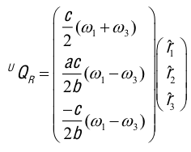
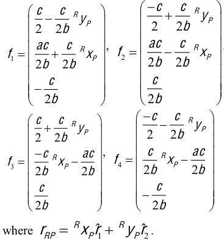

This project entails the study of a combination of locomotion and manipulation in a nonholonomic system. A mobipulator is a small concept car, with four independently controlled wheels. The wheels of the car perform the locomotion as well as the manipulation of paper. Fig. 1 is a picture of the mobipulator we built. The car can be simplified to two differential drives, one for the front wheels and one corresponding to the rear wheels. The idea of a mobipulator was initiated at the Manipulation Lab at Carnegie Mellon University by Matt Mason et al. In this project we built an inexpensive open-loop alternative of the robot.
The goal of this study is to successfully manipulate a sheet of paper on a Desktop from an arbitrary start position to a user specified goal. In formulating a control policy we provide the robot a discrete set of points (P) to goal. Additionally we impose a dual-differential drive constraint on the system. In order to satisfy this constraint the front wheels (hands) are on the paper and rear wheels (feet) are on the desktop at all times. Intuitively, the hands manipulate paper and the feet perform the locomotion.


The first step in the manipulation task was to derive the kinematic model of the robot+paper mechanism. This helped in identifying configurations that would violate the constraint (switching points) described above. The control policy was formulated and tested through simulations in MATLAB. The purpose of the simulator was also to detect switching points and keep track of current robot and paper configurations. This sensing capability inherent in the simulator was used as a compensation for a lack of visual servoing on the actual robot. Therefore the simulator would output to us the wheel angular velocities that were then incorporated for the physical motions.
Extending our derivations of the kinematic model from Section III, we propose a model for the Side-Drag Mode as shown in the Figure. This mode could be integrated into the existing control policy giving additional flexibility to the robot.
The wheels for locomotion in this mode are 1 & 3. The equations governing pure translation of the system can then be derived as
For the side-drag mode we can derive the wheel vectors f_i as:
